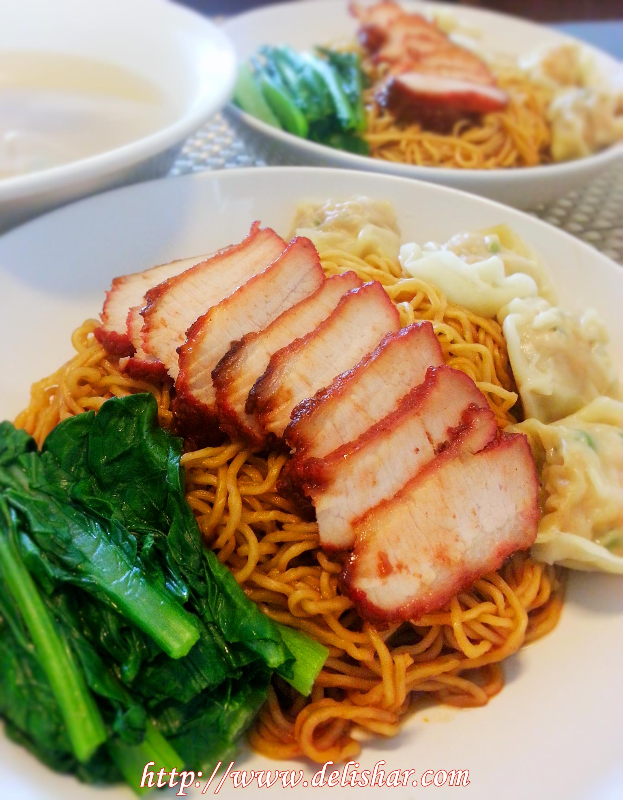

Wanton Mee

Description
This is a recipe for Wanton Mee
Ingredients
- Noodles
- Char Siew
- Wantons
Steps
- Wrap minced meat into Wanton skins. Flavor with seasoning
- Let’s make the mushroom sauce! First, soak the mushrooms in warm water until they’re soft, then squeeze out any extra water and keep the liquid.
- To make the garlic oil, just heat the oil over low-medium heat and fry the garlic until it’s golden and crispy.
Home